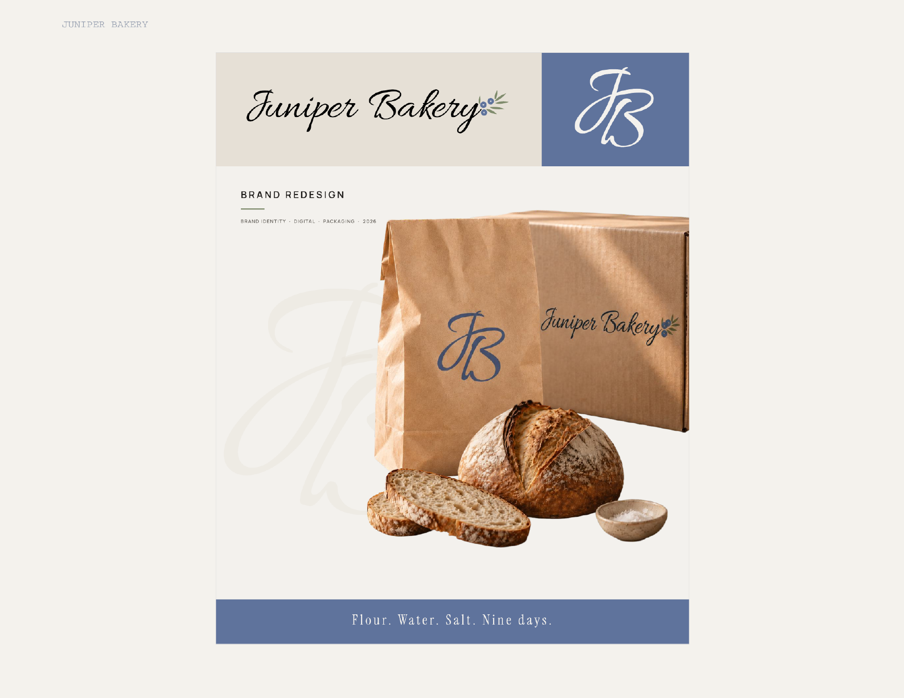
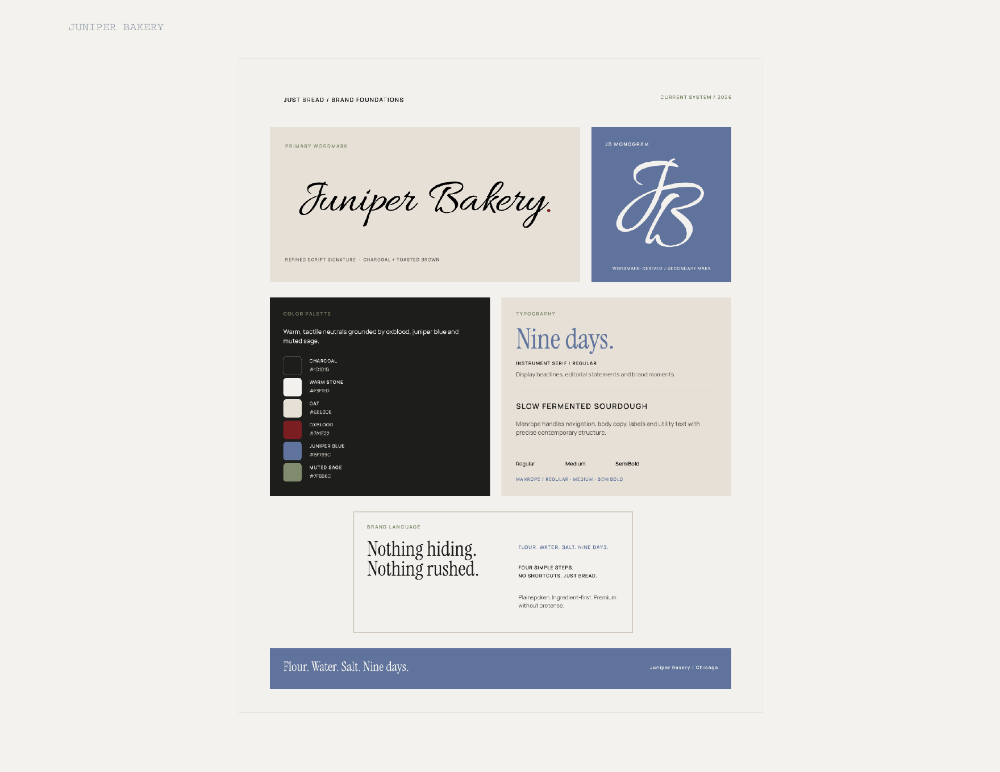
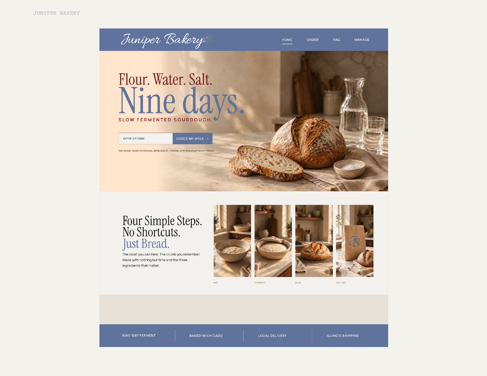
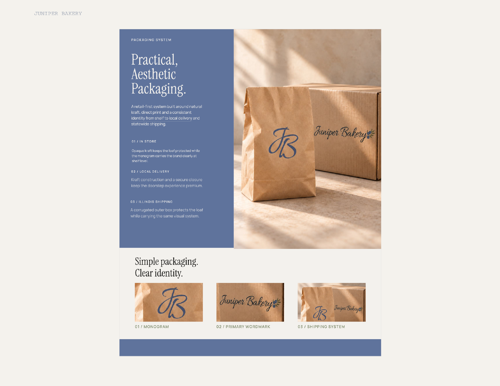

Brand Identity / Packaging / Web
Juniper Bakery
A brand redesign for a bakery where craft is part of every detail.

Practical.
Aesthetic.
Made by hand.
A warm identity and artisan visual language built around bread, packaging, and a slower way of making.


